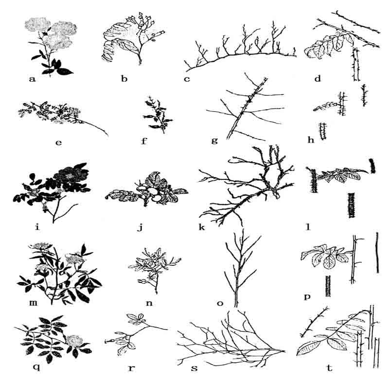

多倍体蔷薇
从林奈时代以来，分类学者在许多蔷薇分类上感到踌躇。近年来，经瑞典植物学家Tackholm、英国三位植物学家Harrison和其同事Blackburn，以及蔷薇专家和遗传学家Hurst先后发现，若干群的蔷薇，特别是属于canina蔷薇族的蔷薇，都是多倍型。它们之间的差异不完全归之于多倍性，广泛的杂交作用也一道参加了作用。
近来Tackholm对这些蔷薇进行了精密的研究。首先谈谈他的计算。14条染色体（n＝7）的物种染色体最少，可以作为基本型。另有21条染色体（3×7）的三倍体，28条（4×7）的四倍体，35条染色体（5×7）的五倍体，42条染色体（6×7）的六倍体以及56条染色体（8×7）的八倍体（参考图92）。有一些平衡的多倍体，在成熟分裂时其所有染色体互相结合成对（二价染色体）；而含有奇数染色体的多倍体，甚至有些含偶数染色体（假定是杂种）的多倍体，在第一次成熟分裂时，却只有七条（或14条）二价染色体，其他都是单染色体。换句话说，当七类染色体各有四条、六条或八条时，每一类染色体都两两接合，好像他们是二倍体似的。不论染色体来源如何，它们绝不是四条、六条或八条接合一起的。这些多倍体的接合染色体，在第一次成熟分裂中，分离开来，每极各得一半。在第二次成熟分裂时，染色体各自分裂，每条子染色体走到一极或另一极。这样，不管是花粉或是胚珠，所有生殖细胞都含有原来染色体的半数。如果它们是有性繁殖，则该种特有的数目便可以维持不变。

图92 蔷薇的多倍体系（仿Tackholm）
在另一群蔷薇里，生殖细胞内所发生的种种变化，表示这群蔷薇并不稳定，所以Tackholm把它们看成是杂种。其中有些含21条染色体，故为三倍体。在成熟初期，花粉母细胞有七条二价染色体和七条单染色体。二价染色体在第一次成熟分裂时分裂开来，每极各得七条；七条单染色体不分裂，零乱分布于两极之上。因此可能得出几种组合。在这方面，该型是不稳定的。当第二次成熟分裂时。所有单染色体，不论是来自以前的二价染色体或是来自单染色体，都分裂成两条。许多子细胞退化了。
另一些杂种，有28条染色体（4×7），但因为接合时期中的染色体行动，表示了每类染色体不够四条，所以Tackholm不把它们列入真正的四倍体。该型只出现七条二价染色体和14条单染色体。第一次分裂时，七条二价染色体纵裂，14条单染色体不分裂，分布也不规则。
另一些杂种有35条染色体（5×7）。成熟时出现七条二价染色体和21条单染色体（图93）。两种染色体的行动与上例相同。

图93 35条染色体的蔷薇第一次成熟分裂（异型分裂）（仿Tackholm）
第四类型的杂种有42条染色体（6×7）。成熟时也只有七条二价染色体，但单染色体却有28条。染色体在成熟时期的行动同前。
现在从花粉的形成方面，将以上四型的“杂种蔷薇”分类如下：
7条二价染色体和7条单染色体：共计21条
7条二价染色体和14条单染色体：共计28条
7条二价染色体和21条单染色体：共计35条
7条二价染色体和28条单染色体：共计42条
这些杂种的独特行动，是只有14条染色体接合成七对二价染色体。我们必须假定这些染色体是相同的，或者是这样的接近，以致它们接合起来。除非像Tackholm所提示的，其他各组的七条染色体，是从不同的野生物种杂交中得来，否则很难理解为什么各该组染色体不能互相接合。经过杂交而新添的各组染色体与原来一组染色体之间的差异以及各组之间的差异，都可以妨碍他们之间的接合。
还有两型杂种可以谈一下：两者都有14条二价染色体和七条单染色体。它们比以上杂种有着两倍多的接合染色体。
Canina群中只有少数杂种，其胚囊（卵子发育所在）染色体的历史已经有过记载（图94）。

图94 蔷薇卵细胞的成熟分裂。所有单染色体走到一极，在那里和半数的接合染色体会合（仿Tackholm）
在纺锤体的赤道上有七条二价染色体，而单染色体则完全在一极集中。每条二价染色体分开成两半，一半走到一极，一半走到另一极。结果，两个胞核中，有一个含七条染色体（来自二价染色体）和所有的21条单染色体，另一个子细胞则只有七条染色体。卵细胞由前一群胞核发育而来。如果卵细胞真由（7+21）染色体的细胞发育而来（似乎是这样的情况），而且从一个含七条染色体的精子（假设另一种精子是不起作用的）受精，则受精卵将有35条染色体，即该型原来染色体数目。
这些多倍体蔷薇的生殖过程，还没有得到完全的阐明，仅从枝繁殖一方面来说，它们将能维持从受精中得到的任何数目的染色体。那些经过单性生殖而形成种子的杂种，也可以维持一定数目的体细胞染色体。由于花粉和卵细胞形成上的不规则，结果似乎会成立许多不同的组合。不熟悉这些类型中染色体的相互关系，势必很难阐明它们的遗传过程。即使这方面有了进展，对于这些杂种蔷薇的组成，仍然有许多须弄清楚的问题。
Hurst在研究蔷薇属的野生种和栽培种以后，认为野生二倍体物种由五个主系组成，即AA、BB、CC、DD、EE（图95a~d、e~h、i~l、m~p、q~t）。从这五个主群可以分辨出许多组合。例如，一种四倍体为BB、CC；另一种为BB、DD；一种六倍体为AA、BB、EE；一种八倍体为BB、CC、DD、EE。
Hurst说到五个主系中，每一个系至少有50个可以鉴别的性状。这些性状都能够在杂种组合中看到。环境条件可以交替促进一系或另一系的性状。Hurst相信，在这些相互关系的基础之上，本属各种的分类是可能做到的。

图95 Canina蔷薇的五种类型，即a~d、e~h、i~l、m~p、q~t各型的特征排在同一横行上，包括花、果实、分枝情况，刺和叶的着生处（仿Hurst）